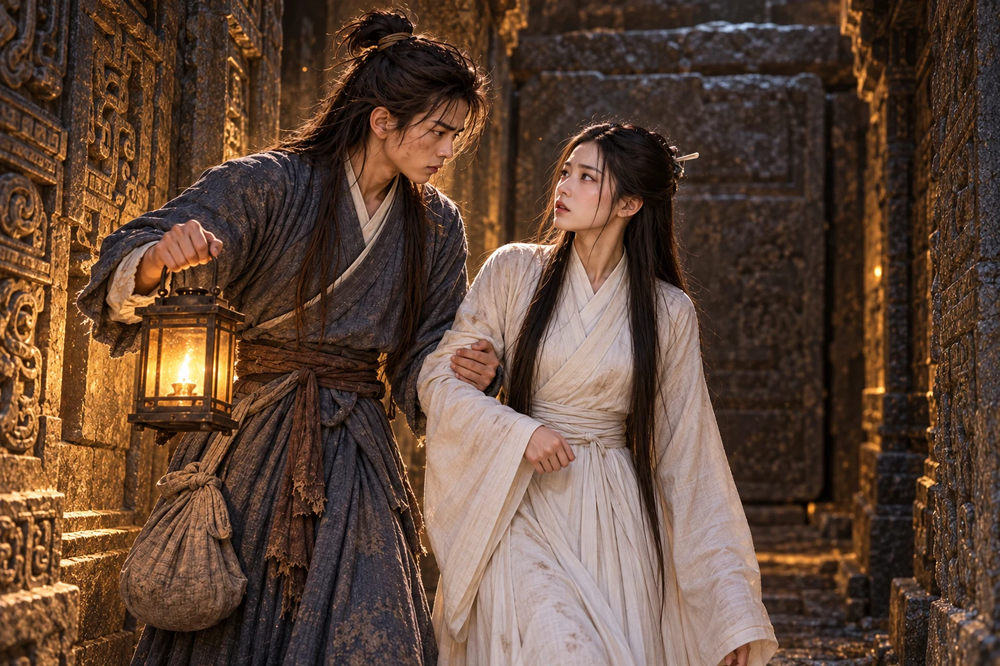

Tanah masih melekat di kuku ketika menyerahkan pedang kayu kepadanya.
Mereka baru kembali dari memakamkan . Dani meletakkan buntalan di dekat dinding, tetapi tidak mengambil pedang itu. Di ruangan tempat perempuan tua tersebut dibaringkan semalam, kain penutupnya sudah dilipat. Lampu yang dinyalakan Xiaolongnü membuat ruangan itu tampak seperti biasa.
“Apakah kita harus mulai berlatih sekarang, Bibi?” tanya Dani.
“Kita mulai dari langkah yang ringan. Kalau terlalu sakit, katakan.” Xiaolongnü memandangnya tanpa mengerti mengapa hari esok akan berbeda dari hari ini.
“Bukan luka di tubuh yang kumaksud, Bibi. Kita baru saja memakamkan Nenek Sun,” kata Dani.
Xiaolongnü menurunkan pedang. Untuk sesaat Dani menyangka ia akan dimarahi. Gadis itu justru memandang kain terlipat di sebelah lampu.
“Nenek Sun sudah meninggal. Menunggu tidak akan membuatnya kembali.” Xiaolongnü terdiam ketika mata Dani memerah. Ia belum pandai menghibur; setelah berpikir sejenak, ia menggeser tempat duduknya lebih dekat. “Aku masih di sini. Engkau belajar denganku.”
Mendengar pengakuan itu, Dani akhirnya mengambil pedang, menggenggam gagangnya terlalu keras. Xiaolongnü tidak menyuruhnya berhenti bersedih. Ia menunjukkan tempat berdiri, lalu meminta Dani mengangkat tangan.
Pukulan pertama Dani meleset. Yang kedua ditahan begitu mudah hingga rasa malu naik ke tengkuknya. Ia maju lebih cepat; ujung pedang Xiaolongnü sudah menyentuh dadanya sebelum tangannya sempat turun.
“Engkau terlalu sibuk mengejar tanganku,” kata gadis itu. “Perhatikan perpindahan kakiku. Dari sanalah engkau dapat mengetahui ke mana tubuhku akan bergerak.”
Dani merendahkan bahu, mengambil ancang-ancang yang masih diingat tubuhnya. Xiaolongnü mengetuk pergelangan tangannya sebelum tenaga sempat terkumpul.
“Jangan gunakan gerakan itu dahulu, Dani,” kata Xiaolongnü.
“Tetapi hanya gerakan inilah yang dapat kupakai ketika terdesak, Bibi,” jawab Dani.
“Justru karena engkau belum dapat menghentikan tenaganya, engkau belum boleh bergantung kepadanya. Pelajari dulu cara menguasai tubuhmu sendiri,” kata Xiaolongnü.
Ia hendak membantah, tetapi teringat rusuk dan . meluruskan tubuh dengan muka panas. Selama ini ilmu ayah angkatnya adalah satu-satunya jawaban ketika ia terpojok. Melepaskannya terasa seperti menyerahkan tangan agar diikat.
mengulangi gerakannya, kali ini perlahan. Dani melihat tumitnya bergeser lebih dahulu, baru pinggang dan tangan. Ia mencoba meniru. Pedang kayunya tetap terlepas.
“Izinkan murid mencobanya sekali lagi, Bibi,” kata Dani, sebelum disuruh.
Pada percobaan berikutnya ia berhasil menjaga gagang itu. Xiaolongnü mengangguk kecil. Tidak ada orang di belakangnya yang tertawa, dan tidak ada hukuman karena ia memerlukan penjelasan dua kali.
Malam itu Dani kembali mengambil buntalannya dari dekat pintu. Ia membawanya lebih jauh ke dalam, ke kamar yang ditunjukkan Xiaolongnü.
Musim berganti di luar . Di dalam, pelajaran bergerak dari langkah dan napas menuju rangkaian pedang, lalu dasar . Latihan yang semula menghabiskan seluruh pagi akhirnya dapat diselesaikan Dani sebelum minyak lampu berkurang separuh.
Namun ada hal yang tidak menjadi lebih mudah hanya karena ia cepat belajar.
Pada tahun pertama, Xiaolongnü mendapati Dani menyembunyikan pergelangan yang bengkak di balik lengan bajunya. Ia telah mengulang satu gerakan sendirian sampai malam karena kesal terus dikalahkan.
“Ulurkan tanganmu, Dani. Aku hendak melihat pergelangan yang kausembunyikan itu,” kata Xiaolongnü.
“Tangan ini masih sanggup memegang pedang, Bibi. Kalau ia mengadu, jangan langsung dipercaya.”
Xiaolongnü menyentuhnya. Dani meringis.
“Tanganmu tidak mengadu. Engkau yang meringis.” Xiaolongnü memeriksa bengkaknya dengan sungguh-sungguh, tidak menyadari Dani sedang berusaha menggagalkan pemeriksaan.
Ia menunduk saat gadis itu membebat pergelangannya. “Kalau setiap kali sakit aku harus berhenti, kapan aku dapat menyusul kepandaian Bibi?”
“Engkau baru dapat maju setelah tanganmu pulih. Luka yang dipaksakan hanya akan menahanmu lebih lama,” jawab Xiaolongnü.
“Kalau beristirahat terus, kapan aku bisa menyusul Bibi? Atau Bibi sengaja supaya aku menjadi murid selamanya?”
mengencangkan simpul, lalu menaruh pedang di luar jangkauannya. “Besok kita melatih langkah kaki. Biarkan pergelangan ini beristirahat dahulu.”
Dani menatap pedang yang dijauhkan itu. “Rupanya hanya tanganku yang mendapat libur. Kakiku tetap harus menanggung nasib buruk.”
“Kakimu tidak terluka. Masih banyak yang dapat kaulatih bersamaku tanpa memakai tangan itu,” jawab Xiaolongnü.
Sesudah kejadian itu ia masih beberapa kali berlatih terlalu keras. Akan tetapi, ia mulai datang sendiri ketika memerlukan obat. Xiaolongnü pun belajar membedakan diam Dani yang sedang memperhatikan dari diamnya ketika menyembunyikan sesuatu.
Empat tahun berlalu. Dani berusia delapan belas, Xiaolongnü dua puluh. Pundaknya telah melebar; jubah biru kelabu dari keluarga Guo sudah beberapa kali dipanjangkan dan ditambal. Kini bagian bahunya kembali terasa sempit. Buntalan tua tetap disimpannya, bersama .
Dalam latihan pedang, Dani kini dapat memaksa Xiaolongnü berpindah dari tempatnya. Ia belum mampu mengalahkannya. Setiap kali mengira sudah menemukan celah, ujung pedang gurunya tiba di sana lebih dahulu.
Pada musim semi keempat, mereka mulai menelaah bagian yang harus dilatih berdua. Xiaolongnü membentangkan catatan perguruan, lalu menunjukkan kaitan antara gerakan dan dasar . Bait-bait yang dahulu dipaksa Zhao masuk ke kepala Dani akhirnya memperoleh bentuk.
“Jadi selama ini aku menyimpan kunci, tetapi tidak diberi tahu pintunya,” kata Dani.
“Sekarang engkau harus mempelajari keduanya. Mengetahui kelemahan suatu ilmu tidak berguna bila tanganmu belum sanggup mencapai kelemahan itu.”
Dani mengulangi gerakan lawan dengan pedang kayu. Xiaolongnü masuk di antara pertahanannya, mengetuk pergelangan dan berhenti dekat sekali. Dani sadar ia dapat mundur, tetapi justru menunggu gadis itu menjauh lebih dahulu. Keinginan untuk tetap berdekatan datang lebih cepat daripada nama untuk perasaan tersebut. Pedangnya turun sampai Xiaolongnü bertanya mengapa ia berhenti.
“Bibi sudah menang. Murid sedang memikirkan alasan yang tidak terlalu memalukan.”
“Kalau engkau terus memandang wajahku, alasanmu akan selalu sama.”
Ia mengatakannya tanpa tersenyum, tetapi ketika Dani tergagap, sudut bibirnya bergerak. Dani baru mengetahui bahwa gurunya dapat sengaja membuatnya kehilangan jawaban.
Untuk latihan , mereka memilih tempat tersembunyi di antara bunga dan semak tinggi. Hawa panas harus dilepaskan tanpa terhalang pakaian yang ketat. Xiaolongnü menjelaskan kebutuhan itu dengan tenang; Dani menyiapkan pemisah kain dan menjaga jarak, kemudian mengikuti petunjuknya. Baginya yang menakutkan adalah kemungkinan salah mengalirkan tenaga ketika keselamatan gurunya bergantung kepadanya.
“Bila ada gangguan, jangan tiba-tiba memutus napas,” pesan . “Bagianmu dapat dihentikan lebih cepat. Bagian yang kulatih memerlukan waktu untuk ditutup.”
Pada malam terakhir, langkah dua orang terdengar di luar semak. mengenali suara Zhao bahkan sebelum namanya disebut.
“Saudara Zhen, apakah kebetulan pula engkau datang ke belakang gunung setiap malam?”
“Aku hendak berlatih sendiri. Jangan terus mengikuti langkahku.”
“Berlatih atau menunggu seseorang keluar dari makam? Hadiah yang kautinggalkan di dekat pintunya belum tentu pernah disentuh.”
Suara pedang terlepas dari sarung. Dani membuka mata. Perkelahian itu mendekat; ketika ia berdiri untuk menghalau mereka, bilah Zhao membelah dahan dan menyingkap tempat latihan.
“Kalian!” bentak Dani. Ia meraih jubah Xiaolongnü dan melemparkannya ke balik pemisah.
Xiaolongnü tersentak. Tenaga yang belum selesai disalurkan berbalik menghantam tubuhnya. Ia menutup pakaian, mencoba duduk tegak, lalu jatuh dengan darah di sudut bibir.
Zhen bergerak hendak mendekat. Dani menyambutnya dengan ranting yang ditegakkan seperti pedang.
“, jangan melangkah lagi. Bibi sedang terluka.”
Zhao menatap mereka dengan mulut melengkung. “Rupanya murid yang melarikan diri memperoleh pelajaran istimewa. Pantaskah seorang guru berlatih begini dengan murid lelakinya?”
“Kautahu latihan tidak boleh diganggu,” jawab Dani. “Atau empat tahun mengajari orang menghafal telah membuatmu lupa isi pelajaranmu sendiri?”
Zhao menusuk. Ranting Dani menyimpang melalui sudut yang justru terbuka oleh gerakan itu. Ia menyentuh pergelangan Zhao dan merebut pedangnya. Kejutan hanya bertahan sesaat: ketika pendeta itu berhenti menyerang serampangan, benturan berikutnya membuat lengan Dani kesemutan. Ia unggul membaca jurus, belum mempunyai tenaga untuk meremehkan lawannya.
“Cukup, Saudara Zhao!” Zhen menghalangi pedang berikutnya. “Nona Long membutuhkan pertolongan.”
“Kalau begitu, bersumpahlah,” kata Dani. “Apa yang kaulihat adalah latihan. Jangan kaubiarkan lidahmu mengubahnya menjadi aib untuk menutupi kesalahan kalian.”
Zhen menatap darah di bibir dan memucat. Ia merasa bersalah, sekaligus takut perempuan yang terus memenuhi pikirannya itu akan membencinya. Ia bersumpah tidak menyebarkan kejadian tersebut dan memaksa Zhao ikut mengucapkannya. Dari sisi , sumpah itu tidak cukup: kedua pendeta telah mengubah tempat latihan menjadi bahaya. Ia mundur sambil menopang Xiaolongnü, pedang tetap terarah kepada mereka.
Obat madu menenangkan batuknya, tetapi luka di dalam belum pulih. Xiaolongnü meminta Dani duduk di sisi ranjang batu.
“Jika aku mati, siapa yang akan menjagamu?”
Dani menahan cawan terlalu keras. “Bibi sedang terluka, bukan sedang memilih orang yang akan menggantikanmu. Katakan obat yang diperlukan. Aku dapat turun mencarinya.”
“Aku berjanji kepada akan menjagamu seumur hidup.” Jemarinya menyentuh gagang pedang di samping ranjang. “Kalau hidupmu berakhir bersamaku, janji itu tidak akan kuingkari.”
Dani mundur, mula-mula tidak percaya. Ujung pedang terangkat beberapa jari. Xiaolongnü memandangnya dengan ketenangan yang lebih mengerikan daripada kemarahan.
“Bibi ingin membunuhku karena takut meninggalkan aku?”
Pertanyaan itu membuat tangannya berhenti. Dani merasakan seluruh tubuhnya dingin.
“Aku ingin hidup bersamamu,” katanya. “Bila Bibi ingin menepati janji, biarkan aku berusaha merawatmu dahulu.”
Dani keluar sebelum Xiaolongnü menjawab. Di lorong ia duduk menempel pada dinding, marah dan ketakutan. Bagi gadis yang dibesarkan di antara makam itu, mati bersama tadi tampak sebagai cara menepati sumpah kepada Nenek Sun. Dani justru merasa seolah orang yang paling dipercayainya hendak merampas hari-hari yang masih ingin dijalaninya. Ia mengusap muka dengan kasar, lalu bangkit mencari obat. Aku tidak mau mati. Bibi juga tidak boleh mati. Dia boleh memarahiku nanti, sesudah sembuh.
Ketika kembali, ia mendengar suara perempuan lain menuntut .
berdiri di depan ruang istirahat dengan pedang terhunus. Ia mengaku membawa perintah gurunya. Dani baru hendak menjawab ketika putih bergerak dari belakang gadis itu.
“Rupanya anak dari kediaman Lu,” ujar . “Setiap berjumpa, engkau memilih pintu yang hendak kulewati untuk berdiri.”
“Di mana ?”
“Masih hidup. Sayangnya, rasa terima kasihnya tidak bertambah bersama usianya.” Li Mochou memandang ke dalam. “Adik seperguruan, wajahmu pucat sekali. Kakak datang pada saat yang tepat.”
“Kalau Kakak hendak menolong, bawalah muridmu pergi,” jawab . “Aku tidak mempunyai tenaga untuk melayani perebutan kitab.”
“Tenaga untuk mengajar pemuda itu ada, tetapi untuk berbagi warisan dengan kakak sendiri tidak?”
“ muridku. Kakak mengetahui syarat yang dahulu Kakak tolak.”
Senyum Li Mochou menipis. Ia memerintahkan Hong Lingbo menyingkirkan Dani. Pedang mereka beradu; Dani menekan lawannya ke sisi dinding dengan gerak . Ketika ia hendak memutar bilah Hong Lingbo, gurunya menyambar pergelangan.
Hantaman itu membuat ujung pedang Dani jatuh. Xiaolongnü bangkit membantu, tetapi memutus napasnya di tengah serangan. Li Mochou menggeser tubuh, lalu menghantam bahunya. Dani menangkap gurunya sebelum kepala Xiaolongnü membentur batu.
Dani berdiri di depan Xiaolongnü dengan pedang gemetar di tangannya.
“Lingbo,” kata Li Mochou lembut, “lihat baik-baik. Menjadi berani tidak sama dengan menjadi cukup pandai untuk melindungi orang lain.”
Dani menahan pedang Hong Lingbo, sementara Xiaolongnü menariknya masuk ke lorong samping. Ia mengetahui bagian makam yang belum dikenal kedua penyerang. Melalui pintu tersembunyi mereka mencapai sisi luar gerbang batu. Udara malam menyentuh wajah Dani; untuk sesaat ia mengira mereka selamat.
Xiaolongnü menunjukkan letak mekanisme penutup. “Turunkan sesudah aku masuk. Kakak tidak akan memperoleh warisan perguruan ini.”
“Mengapa Bibi harus kembali?”
“Aku bersumpah menjaga makam. Engkau masih dapat hidup di luar. Carilah .”
Dani memandang jalan menuruni gunung. Jalan itu berarti hidup bagi dirinya, tetapi meninggalkan Xiaolongnü menunggu mati. Aku tidak akan membiarkannya sendirian, pikirnya. Ia tidak mengetahui syarat sumpah perguruan; tidak ada kebebasan atau cinta yang dijanjikan sebagai imbalan. Ia hanya tahu orang yang hendak ditinggalkannya telah menjadi tempat pulangnya.
“Bibi sungguh mengira aku akan menghabiskan hidup dengan bersyukur karena berhasil meninggalkanmu di sini?”
Xiaolongnü berbalik. Bahunya bergetar, tetapi ia tidak mengulurkan tangan. Dani menarik mekanisme. Ketika batu mulai turun, ia merunduk dan meluncur melewati celah terakhir, kembali ke sisinya.
Dentuman penutup mengguncang lantai.
“Dani!” meraih wajahnya. “Sekarang engkau tidak dapat keluar lagi!”
“Kalau Bibi hendak memarahiku, kita mempunyai waktu sampai lampunya padam.” Napasnya belum teratur. “Aku datang untuk menemanimu hidup. Kalau tidak ada lagi jalan, aku tetap menemanimu.”
Ia memeluk pemuda itu begitu kuat hingga luka bahunya terasa. baru mengetahui bahwa Xiaolongnü dapat menangis tanpa mengeluarkan suara.
mengetahui keadaan mereka setelah memeriksa batu yang tak dapat diangkat. Ia memalingkan wajah kepada adik seperguruannya; keramahan yang dibuat-buat hilang dari matanya.
“Kau hendak mengubur kita semua demi beberapa halaman ilmu?”
“Kakak yang memilih masuk dengan senjata,” jawab Xiaolongnü. “Sekarang kita sama-sama harus menerima akibatnya.”
Li Mochou menangkap Dani ketika ia maju melindungi gurunya. Pedang yang terlepas direbutnya; ujungnya berhenti di leher pemuda itu.
“Aku hanya memerlukan salah seorang dari kalian hidup. Anak muda, masihkah engkau bersedia melindunginya jika yang harus mati adalah dirimu?”
“Lepaskan Bibi,” kata Dani. “Kalau nyawa seseorang dapat memuaskanmu, ambil nyawaku.”
Li Mochou menekan bilah sampai Dani merasakan dinginnya. “Engkau bahkan tidak meminta waktu untuk berpikir.”
“Aku sudah memilih ketika kembali melewati pintu.”
Wajah Li Mochou berubah. Dahulu ia meninggalkan perguruan demi cinta yang berakhir sebagai dendam; kini adiknya yang hampir tak mengenal dunia justru mempunyai lelaki yang rela mati bersamanya. Kesetiaan Dani menyentuh luka yang tak pernah sembuh itu. Iri menajamkan kebenciannya kepada Xiaolongnü.
“Adik seperguruan, rupanya sumpahmu telah terpatahkan. Seandainya pintu itu masih terbuka, sekarang engkau boleh turun gunung.”
Dani tidak memahami maksudnya. Xiaolongnü memanfaatkan kelengahan kakaknya untuk melontarkan jarum dan menariknya lepas. Mereka mundur ke ruang peti batu, memisahkan diri dengan pintu dalam sebelum Li Mochou dapat menerjang kembali.
Di sana menjelaskan : penerus yang menerima ajaran sepenuhnya harus tetap tinggal di makam, kecuali seorang lelaki rela mati untuknya tanpa mengetahui syarat tersebut terlebih dahulu. Li Mochou menolak sumpah itu; karena itulah warisan utama jatuh kepada adiknya.
“Mengapa Bibi tidak pernah memberitahuku?” tanya Dani.
“Kalau engkau mengetahuinya, bagaimana aku dapat membedakan pengorbananmu dari keinginan membawaku keluar?”
memandang gurunya lama. “Aku tidak perlu sebuah aturan untuk mengetahui bahwa aku tidak ingin kehilanganmu.”
Xiaolongnü meraih tangannya dan menempelkannya pada pipi. “Kalau ada perempuan lain yang memperlakukanmu dengan baik, apakah engkau juga akan kembali untuk mati bersamanya?”
“Aku akan menolongnya kalau mampu. Tetapi saat melihat pintu tadi turun, yang kupikirkan hanya bahwa Bibi akan sendirian di belakangnya.” Ia menelan napas. “Aku tidak sanggup membiarkan itu terjadi.”
“Jadi aku berbeda bagimu?”
“Bibi masih perlu bertanya setelah aku menyia-nyiakan jalan keluar yang begitu bagus?”
Xiaolongnü tersenyum di antara air mata. “Aku perlu mendengarnya darimu.”
Dani merapat dan memeluk bahunya. “Kalau semua orang sama saja, mengapa aku kembali ke tempat yang pintunya sedang ditutup? Bibi biasanya begitu pandai. Perkara semudah ini masih harus kuterangkan?” Suaranya menggoda, tetapi tangannya memeluk lebih erat daripada sebelumnya.
Gadis itu bersandar kepadanya. Untuk pertama kalinya ia membiarkan keinginan untuk tetap dekat mengalahkan ajaran yang menyuruhnya menekan perasaan. Di balik pintu terdengar memeriksa dinding; mereka masih terancam, tetapi Dani tidak ingin mati sebelum sempat membawa Xiaolongnü melihat dunia yang selama ini hanya diceritakannya.
Peti batu menyediakan tempat untuk beristirahat tanpa menyentuh lantai yang lembap. Ketika Dani menggeser lampu, cahaya mengenai bekas goresan yang tersembunyi pada bagian dalam. Xiaolongnü meminta lampu didekatkan.
Tulisan itu menunjukkan jalan menuju ruang di bawah makam. Mereka membuka lempeng penutup dan turun bersama. Di dinding bawah terdapat peninggalan Wang Chongyang: sebagian ajaran serta petunjuk jalur air keluar.
“Pendiri meninggalkan ini di makam perguruan kita?” Dani mengangkat lampu. “Kalau Guru Zhao mengetahuinya, tentu beliau akan menyuruh dinding ini menghafalkan dirinya sendiri.”
menyentuh huruf yang menyebut Lin Chaoying. Ia membaca cukup lama untuk memahami maksud peninggalan itu, kemudian menunjuk petunjuk saluran air.
“Ilmunya dapat kita pelajari bila masih hidup. Sekarang bantu aku mengingat jalannya.”
Dani menopangnya melalui lorong berukir. menemukan pintu terbuka di atas dan memanggil gurunya; beberapa saat kemudian Li Mochou menyusul. Mereka tidak memperoleh waktu untuk menyalin semua ajaran. Xiaolongnü menyembunyikan pentingnya tulisan dengan berdiri di depannya, lalu menunjukkan arah air.

“Jangan ada yang menyerang,” kata . “Kalau orang yang mengetahui jalannya mati, Bibi harus menanyakan arah kepada ikan.”
Li Mochou memandangnya tanpa senyum. “Lidahmu masih dapat bekerja rupanya. Berjalanlah.”
Air naik sampai dada. Di bagian yang harus dilalui dengan menyelam, Dani mengikat buntalan agar tidak tercecer, lalu memeriksa napas Xiaolongnü. Gadis itu menggenggam tangannya dan mengangguk. Mereka menyelam bersama; di tikungan sempit pedang Dani tersangkut. Ia melepaskannya untuk meraih Xiaolongnü ketika arus menggeser tubuh gurunya.
Udara akhirnya mengenai wajah mereka di luar lereng. Dani menarik Xiaolongnü ke batu yang kering, disusul Hong Lingbo dan Li Mochou. Semua basah dan kehabisan napas. Li Mochou masih hendak mendekat ketika Xiaolongnü mengangkat tangan dengan jarum di sela jari.
“Kakak boleh mencoba mengambil kitab lagi setelah lukaku pulih.”
Perempuan itu menghitung jarak. Ia melihat Dani berdiri di sisi Xiaolongnü, kemudian memanggil muridnya dan pergi tanpa berpamitan.
Dani menunggu sampai langkah mereka hilang, baru duduk. Xiaolongnü menyandarkan kepala di bahunya. Cahaya fajar menembus pepohonan; mereka dapat melihat gunung yang sepanjang malam disangka tak akan ditemui lagi.
“Bibi tahu? Tadi kakiku gemetar sekali. Untung pintunya tidak sempat melihat.”
Xiaolongnü mengangkat wajah. “Tetapi engkau tetap kembali.”
Senyum Dani perlahan surut. “Aku takut mati di luar, sementara Bibi di dalam mengira aku sudah meninggalkanmu.”
Xiaolongnü menggenggam tangannya. “Kalau begitu, sesudah ini kita bersama. Aku tidak suka engkau berada di tempat yang tidak bisa kulihat.” Ucapannya begitu terus terang hingga Dani yang biasanya cepat menjawab justru menunduk tersenyum.
Dani menatap jalan di bawah, lalu pakaian mereka yang meneteskan air. Ia bangkit dan mengulurkan tangan.
“Untuk pagi ini, kita mencari tempat yang atapnya tidak terbuat dari batu. Sesudah itu Bibi boleh memutuskan apakah dunia di luar sungguh seburuk yang diceritakan.”
menerima tangannya. Kali ini ia meninggalkan makam dengan pilihannya sendiri.